<mat-toolbar class="navbar bg_dark">
  <div style="width: 150px;"></div>
  <div class="title stf" >Welcome to {{title}}!</div>
  <div>
    <a routerLink="/" class="chip_link">
      <span  class="stf">Home</span>
      
    </a>
  </div>
</mat-toolbar>

<mat-sidenav-container class="bg_dark">
  <mat-sidenav mode="side" opened>
    <mat-nav-list class="my-nav-list">
      <a mat-list-item routerLink="/persons" class="chip_link stf">
        <!-- <mat-icon>person</mat-icon> -->
        
        <span class="nav-caption ">List of Persons</span>
      </a>

      <a mat-list-item routerLink="/ships" class="chip_link stf">
        <!-- <mat-icon>airplanemode_active</mat-icon> -->
        <div class="icon_ship"></div>
        
        <span class="nav-caption">List of Ships</span>
      </a>
    </mat-nav-list>

  </mat-sidenav>
  <mat-sidenav-content class="bg_dark">

    <router-outlet></router-outlet>

  </mat-sidenav-content>
</mat-sidenav-container>

<mat-toolbar class="footer bg_dark">
  <span>Author: Lucas Ramon</span>
  <span>Contact: lucas.ramon.jc@gmail.com</span>
  <span>Github: <a href="https://www.github.com/lucasramon" class="chip_link">github.com/lucasramon</a></span>
</mat-toolbar>